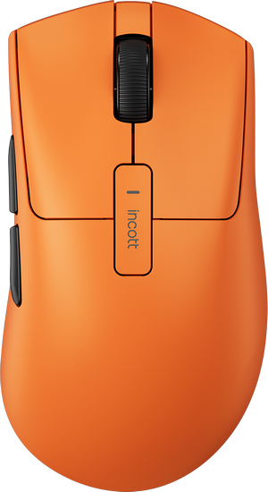

跳到设置
incott
®
鼠标工作台
本地运行
原版驱动 ↗
连接鼠标
↗
YOUR DEVICE
G23 / G24
鼠标设置
连接
未连接
当前 DPI
—
回报率
—
电量
—
↻
连接鼠标，读取当前配置。也可以先浏览设置。
选择一个按键，重新定义它。
按键测试 ↗

01
左键
—
右键
—
02
滚轮按下
—
03
04
前侧键
—
05
后侧键
—
DPI 键
—
06
点击按键编号编辑
G SERIES / 06 KEYS
01 · 左键
修改后统一写入鼠标
按键定义
DPI 灵敏度
性能设置
宏
保存为本地预设
名称
取消
保存预设